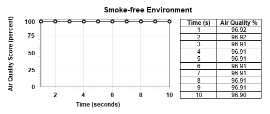
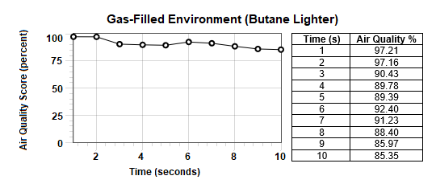
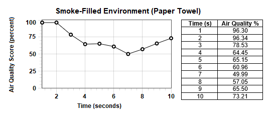

CS320 - Alexa Air Quality Application
In the Spring of 2021, I took part in a semester-long project in my CS320 Algorithms class at CSU. The group that I was in decided to create an air quality Alexa appication that used a Raspberry Pi with a sensor. The goal of the project was to create a program that would run on the Raspberry Pi to collect data and accurately determine the air quality, then relay that information to Alexa so that the user could use a voice command like "Alexa, what's the air quality right now?" in order to get Alexa to tell the air quality. The biggest hurdle in this project was figuring out how to do the Alexa integration through Amazon's services, but it was a really great experience to learn from.
  CS314 - Trip Planning Application
In the Spring of 2021, I took part in another semester-long project in my CS314 Object-Oriented Programming class. CS314 and CS414 have been, by far, my favorite Computer Science classes that I have taken at Colorado State University thus far. In this class, we worked in teams to create a Trip Planning application that utilized React with JavaScript on the front-end and Java on the back-end. The purpose of the trip planning application was to have a mobile application that the user could use to look up different points on the earth, link them together, optimize the routes, then save or load the trip for viewing at a different time. The structure of the class was also made to mimic real-world software development teams, and we formatted our meetings and work periods with a Scrum methodology. This class has provided me with invaluable experience and a glimpse into how real-world software development jobs and teams will function.